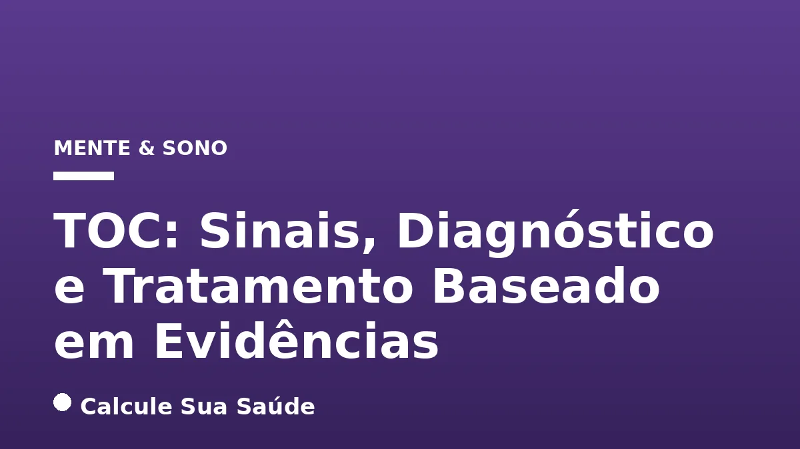

Aviso médico importante
Este conteúdo é educativo e informativo e não substitui a consulta, o diagnóstico ou o tratamento de um profissional de saúde. Em caso de sintomas, procure orientação médica.
Índice do Artigo
- 1. O Que é o Transtorno Obsessivo-Compulsivo (TOC)?
- 2. Epidemiologia do TOC no Brasil e no Mundo
- 3. Obsessões: A Natureza dos Pensamentos Intrusivos
- 4. Compulsões: Rituais para Aliviar a Angústia
- 5. As Raízes do TOC: Causas e Fatores de Risco
- 6. Diagnóstico do TOC: Uma Avaliação Criteriosa
- 7. Comorbidades Psiquiátricas Associadas ao TOC
- 8. Prevenção do TOC: Desafios e Recomendações
- 9. O Tratamento do TOC: Abordagens Baseadas em Evidências
- 10. Psicoterapia: O Padrão Ouro com TCC e EPR
- 11. Farmacoterapia: O Papel dos Medicamentos
- 12. Estratégias para Casos Resistentes
- 13. Desmistificando o TOC: Mitos Comuns vs. Realidade Científica
- 14. A Importância do Apoio, Autocuidado e Qualidade de Vida
- 15. Conclusão: Um Caminho para o Manejo do TOC
- 16. Perguntas frequentes
O Transtorno Obsessivo-Compulsivo (TOC) é uma condição de saúde mental séria e crônica, que afeta milhões de pessoas em todo o mundo, incluindo uma parcela significativa da população brasileira. Caracterizado por um ciclo persistente de pensamentos intrusivos e indesejados (obsessões) e comportamentos repetitivos (compulsões), o TOC pode ser debilitante, impactando profundamente a qualidade de vida e o funcionamento diário dos indivíduos.
Para quem convive com o TOC ou conhece alguém que enfrenta essa realidade, é fundamental compreender seus sinais, as causas subjacentes e, sobretudo, as opções de tratamento eficazes e baseadas em evidências científicas. Este artigo, elaborado pelo portal Calcule Sua Saúde, visa desmistificar o TOC, fornecendo informações aprofundadas e rigorosas para auxiliar na identificação precoce e na busca por ajuda especializada.
Neste guia completo, abordaremos desde a definição e epidemiologia do transtorno até as complexas interações de fatores biológicos, genéticos e ambientais que contribuem para seu desenvolvimento. Detalharemos os sintomas mais comuns, o processo diagnóstico e as abordagens terapêuticas mais recomendadas, como a Terapia Cognitivo-Comportamental (TCC) e a farmacoterapia, sempre com o objetivo de oferecer um panorama claro e acolhedor sobre essa condição.
Em resumo
- O TOC é um distúrbio mental crônico caracterizado por obsessões (pensamentos intrusivos) e compulsões (rituais para aliviar a ansiedade).
- Não há uma causa única, mas fatores biológicos, genéticos e ambientais contribuem para o desenvolvimento do transtorno.
- O diagnóstico é clínico, realizado por profissionais de saúde mental, e exige que os sintomas causem sofrimento significativo ou prejuízo funcional.
- A Terapia Cognitivo-Comportamental (TCC), especialmente com Exposição e Prevenção de Resposta (EPR), é o tratamento de primeira linha e padrão ouro.
- Medicamentos como os Inibidores Seletivos da Recaptação de Serotonina (ISRSs) e a Clomipramina são eficazes, frequentemente em doses mais altas que para depressão.
- A combinação de psicoterapia e farmacoterapia é, em muitos casos, a abordagem mais eficaz, com tratamento de longo prazo para evitar recaídas.
1. O Que é o Transtorno Obsessivo-Compulsivo (TOC)?
O Transtorno Obsessivo-Compulsivo (TOC) é um distúrbio mental crônico e complexo, que se manifesta através de um padrão de pensamentos, imagens ou impulsos indesejados e repetitivos, denominados obsessões. Essas obsessões são intrusivas, persistentes e geram uma ansiedade intensa e desconforto significativo para o indivíduo. Para tentar neutralizar ou aliviar essa angústia, a pessoa se sente compelida a realizar compulsões, que são comportamentos ou atos mentais repetitivos e ritualísticos. Este ciclo vicioso de obsessão e compulsão é a característica central do TOC e é extremamente difícil de ser interrompido sem intervenção terapêutica adequada.
É crucial diferenciar o TOC de meros traços de personalidade, como ser perfeccionista ou muito organizado. No TOC, as obsessões e compulsões consomem uma quantidade significativa de tempo do indivíduo (geralmente mais de uma hora por dia) e causam sofrimento clinicamente significativo, interferindo de forma marcante nas atividades diárias, nas relações sociais, no trabalho ou nos estudos. A pessoa com TOC reconhece, na maioria dos casos, que suas obsessões são irracionais ou excessivas, mas se sente incapaz de controlá-las, o que aumenta ainda mais seu sofrimento.
2. Epidemiologia do TOC no Brasil e no Mundo
Contrariando a percepção de que o TOC seria uma condição rara, dados epidemiológicos revelam que ele é, na verdade, um dos transtornos psiquiátricos mais comuns. A Organização Mundial da Saúde (OMS) estima que o TOC afete entre 1% e 2% da população mundial. No Brasil, as estimativas apontam que cerca de 4 milhões de pessoas convivem com o transtorno, o que representa aproximadamente uma a cada 50 brasileiros. Essa prevalência ao longo da vida é estimada em cerca de 2% a 3% na população geral, e a prevalência anual em 1,5%.
O TOC é considerado o quarto transtorno psiquiátrico mais comum, superado apenas por fobias, abuso de substâncias e depressão. Estudos epidemiológicos realizados no Brasil, como o Estudo Multicêntrico de Morbidade Psiquiátrica, já indicaram prevalências significativas, variando entre 0,5% e 2,1% em diferentes capitais. Esses dados reforçam a necessidade de maior conscientização e acesso a serviços de saúde mental qualificados para o diagnóstico e tratamento precoce da condição.
3. Obsessões: A Natureza dos Pensamentos Intrusivos
As obsessões são o ponto de partida do ciclo do TOC. Elas são definidas como pensamentos, impulsos ou imagens mentais recorrentes e persistentes que são vivenciados, em algum momento durante o transtorno, como intrusivos e indesejados, e que, na maioria dos indivíduos, causam ansiedade ou angústia acentuadas. A pessoa tenta ignorar ou suprimir esses pensamentos, impulsos ou imagens, ou neutralizá-los com algum outro pensamento ou ação (ou seja, uma compulsão).
Medo de contaminação
Um dos tipos mais comuns de obsessão é o medo excessivo e irracional de contaminação por germes, vírus, bactérias, sujeira ou substâncias químicas. Isso pode levar a uma preocupação constante com a limpeza e a higiene pessoal ou do ambiente.
Preocupações com segurança
Muitas pessoas com TOC experimentam preocupações persistentes com a segurança, como o medo de não ter trancado portas, janelas, ou de ter deixado o fogão ou outros aparelhos elétricos ligados, o que pode resultar em incêndios ou outros desastres.
Necessidade de ordem e simetria
A obsessão por organização, simetria e ordem é outra manifestação frequente. O indivíduo pode sentir uma angústia intensa se os objetos não estiverem perfeitamente alinhados, organizados de uma determinada maneira ou se houver qualquer assimetria percebida.
Pensamentos intrusivos de conteúdo tabu
Pensamentos intrusivos sobre temas sensíveis, como religião, sexo ou violência, são comuns e extremamente perturbadores para quem os experimenta. A pessoa teme que esses pensamentos reflitam seus verdadeiros desejos ou que possa agir de acordo com eles, gerando culpa e vergonha.
Medo de causar danos
Uma obsessão particularmente angustiante é o medo irracional de prejudicar a si mesmo ou a outras pessoas, seja acidentalmente ou intencionalmente. Esses pensamentos são egodistônicos, ou seja, estão em desacordo com os valores e a personalidade do indivíduo, o que causa grande sofrimento.
4. Compulsões: Rituais para Aliviar a Angústia
As compulsões são comportamentos ou atos mentais repetitivos que o indivíduo se sente impelido a realizar em resposta a uma obsessão ou de acordo com regras que devem ser aplicadas rigidamente. O objetivo desses atos é prevenir ou reduzir a ansiedade ou o sofrimento, ou evitar algum evento ou situação temida. No entanto, esses comportamentos ou atos mentais não estão conectados de uma forma realista com o que eles se destinam a neutralizar ou prevenir, ou são claramente excessivos.
Rituais de limpeza e lavagem
Em resposta ao medo de contaminação, a pessoa pode lavar as mãos excessivamente, tomar banhos prolongados, limpar objetos ou ambientes de forma repetitiva e meticulosa, mesmo quando não há necessidade real de higiene.
Verificação repetitiva
Para aliviar a preocupação com a segurança, é comum a verificação repetitiva de portas, janelas, aparelhos elétricos, ou até mesmo tarefas realizadas, como o envio de um e-mail, para garantir que nada de ruim acontecerá.
Contagem e repetição
Alguns indivíduos realizam rituais de contagem mental ou seguem padrões numéricos rígidos. Outros podem repetir frases, palavras ou orações específicas para afastar pensamentos ruins ou evitar que algo temido aconteça.
Organização e alinhamento
Em casos de obsessão por ordem e simetria, as compulsões podem envolver o alinhamento e a organização de objetos de maneira extremamente precisa e meticulosa, gastando horas para que tudo esteja "perfeito".
5. As Raízes do TOC: Causas e Fatores de Risco
O Transtorno Obsessivo-Compulsivo é uma condição multifatorial, o que significa que não há uma única causa específica, mas sim uma interação complexa de diversos elementos. A compreensão desses fatores é crucial para uma abordagem terapêutica abrangente e eficaz.
Fatores biológicos
Estudos indicam que o TOC pode estar associado a alterações na química natural do corpo e nas funções cerebrais. Desequilíbrios nos níveis de neurotransmissores, especialmente a serotonina, têm sido consistentemente relacionados ao transtorno. Além disso, pesquisas de neuroimagem revelam hiperatividade em circuitos córtico-estriado-tálamo-corticais, sugerindo disfunções em áreas cerebrais responsáveis pelo controle de impulsos e tomada de decisões.
Fatores genéticos
Há uma predisposição genética significativa para o TOC. Indivíduos com parentes de primeiro grau (pais, irmãos) que possuem o transtorno apresentam um risco aumentado de desenvolvê-lo, especialmente se o início dos sintomas ocorreu na infância ou adolescência. Isso sugere que a genética pode conferir uma vulnerabilidade, embora não seja o único fator determinante.
Fatores ambientais
Eventos de vida estressantes, traumas infantis, como abuso físico, emocional ou sexual, podem atuar como gatilhos ou exacerbar os sintomas do TOC em indivíduos geneticamente predispostos. Em alguns casos pediátricos, infecções estreptocócicas podem desencadear ou agravar sintomas de TOC, uma condição conhecida como PANDAS (Transtornos Neuropsiquiátricos Autoimunes Pediátricos Associados a Estreptococo). É importante notar que o estresse crônico, por si só, pode impactar a saúde mental de diversas formas, como detalhado em nosso artigo sobre Cortisol e Estresse Crônico: Neurobiologia.
6. Diagnóstico do TOC: Uma Avaliação Criteriosa
O diagnóstico do Transtorno Obsessivo-Compulsivo é essencialmente clínico e deve ser realizado por profissionais de saúde mental qualificados, como psiquiatras ou psicólogos. Não existem exames laboratoriais ou de imagem que confirmem o TOC; em vez disso, o processo envolve uma avaliação psicológica detalhada e a coleta de um histórico completo do paciente.
Durante a avaliação, o profissional investigará os pensamentos, sentimentos, sintomas e padrões de comportamento do indivíduo. É fundamental identificar a presença de obsessões e/ou compulsões, determinar sua frequência, intensidade e o grau de sofrimento e prejuízo que causam na vida diária. O diagnóstico pode ser desafiador, pois os sintomas do TOC podem se sobrepor ou ser confundidos com os de outros transtornos mentais, como o Transtorno de Personalidade Obsessivo-Compulsiva (TPOC), transtornos de ansiedade, depressão ou até mesmo esquizofrenia. Por isso, uma anamnese cuidadosa e a expertise do profissional são indispensáveis para um diagnóstico preciso.
Em alguns casos, um exame físico pode ser solicitado para descartar outras condições médicas que possam estar mimetizando ou contribuindo para os sintomas. A confirmação do diagnóstico é um passo crucial para o início de um plano de tratamento adequado e personalizado.
7. Comorbidades Psiquiátricas Associadas ao TOC
É bastante comum que o Transtorno Obsessivo-Compulsivo coexista com outras condições psiquiátricas, o que é conhecido como comorbidade. A presença de comorbidades pode complicar o quadro clínico, influenciar a gravidade dos sintomas e, por vezes, dificultar o diagnóstico e o tratamento. As comorbidades mais frequentemente observadas em pessoas com TOC incluem:
- Transtornos de Ansiedade: Há uma alta sobreposição entre TOC e outros transtornos de ansiedade, como transtorno de ansiedade generalizada, transtorno do pânico e fobia social. A ansiedade é um componente central do TOC, e a presença de outros transtornos ansiosos pode intensificar o sofrimento do paciente.
- Transtornos Depressivos: A depressão é uma comorbidade muito comum, afetando uma parcela significativa dos indivíduos com TOC. O sofrimento crônico, a interferência nas atividades diárias e a sensação de falta de controle sobre as obsessões e compulsões podem levar ao desenvolvimento de sintomas depressivos.
- Transtornos de Tique: Até 30% das pessoas com TOC têm ou tiveram um transtorno de tique, como a Síndrome de Tourette. A relação entre TOC e tiques é complexa, e a presença de tiques pode influenciar as escolhas de tratamento.
- Transtornos Alimentares: Embora menos frequente, alguns estudos indicam uma associação entre TOC e transtornos alimentares, especialmente aqueles que envolvem rituais e preocupações com controle.
- Transtornos Relacionados ao Uso de Substâncias: Em alguns casos, indivíduos com TOC podem recorrer ao uso de substâncias como uma forma de automedicação para tentar aliviar a ansiedade e o sofrimento causados pelo transtorno.
A identificação e o tratamento adequado dessas comorbidades são fundamentais para o sucesso do manejo global do TOC e para a melhoria da qualidade de vida do paciente.
8. Prevenção do TOC: Desafios e Recomendações
Atualmente, não existe uma forma conhecida de prevenção primária para o Transtorno Obsessivo-Compulsivo. Dada a complexidade de suas causas, que envolvem fatores biológicos, genéticos e ambientais, não há medidas específicas que possam garantir que uma pessoa não desenvolverá o transtorno. No entanto, algumas recomendações podem ser úteis para o manejo geral da saúde mental e para evitar o agravamento dos sintomas caso o transtorno já esteja em desenvolvimento.
É amplamente recomendado manter a ansiedade sob controle, buscando estratégias saudáveis para lidar com o estresse e as pressões do dia a dia. Isso pode incluir a prática regular de exercícios físicos, técnicas de relaxamento, uma alimentação equilibrada e um sono de qualidade. Embora essas medidas não previnam o TOC, elas podem contribuir para um bem-estar mental geral e, em alguns casos, mitigar a intensidade de sintomas ansiosos.
A prevenção secundária, que foca no diagnóstico e tratamento precoces, é a estratégia mais eficaz para o TOC. Quanto antes o transtorno for identificado e o tratamento adequado for iniciado, maiores são as chances de um bom prognóstico, de controle dos sintomas e de prevenção do agravamento da condição e do impacto negativo na vida do indivíduo.
9. O Tratamento do TOC: Abordagens Baseadas em Evidências
O tratamento do Transtorno Obsessivo-Compulsivo visa controlar os sintomas de forma que eles não dominem a vida diária do paciente, permitindo uma melhora significativa na qualidade de vida. É importante ressaltar que o tratamento do TOC é, em muitos casos, de longo prazo e requer comprometimento tanto do paciente quanto dos profissionais de saúde. As duas principais modalidades de tratamento são a psicoterapia e a farmacoterapia, e a combinação de ambas é frequentemente a mais eficaz, especialmente em casos moderados a graves.
A escolha da abordagem terapêutica depende de diversos fatores, como a gravidade dos sintomas, a presença de comorbidades, a idade do paciente e suas preferências. No entanto, as diretrizes clínicas e a vasta evidência científica apontam para a superioridade de certas intervenções, que serão detalhadas a seguir. É fundamental que qualquer plano de tratamento seja individualizado e supervisionado por profissionais de saúde mental qualificados.
10. Psicoterapia: O Padrão Ouro com TCC e EPR
A psicoterapia é um pilar fundamental no tratamento do TOC, e a Terapia Cognitivo-Comportamental (TCC), com um foco específico na técnica de Exposição e Prevenção de Resposta (EPR), é considerada o tratamento de primeira linha e o "padrão ouro" para o transtorno, com a mais alta evidência empírica de eficácia. A TCC é eficaz na redução dos sintomas obsessivo-compulsivos em cerca de 70% dos pacientes, sendo a escolha preferencial para casos leves ou moderados, ou em combinação com a farmacoterapia para casos mais graves.
Exposição e Prevenção de Resposta (EPR)
A EPR é uma técnica central da TCC que consiste em expor gradualmente o paciente a situações, objetos ou pensamentos temidos que desencadeiam as obsessões, enquanto o impede ativamente de realizar as compulsões ou rituais de segurança. Por exemplo, um paciente com medo de contaminação pode ser exposto a um objeto "sujo" e instruído a não lavar as mãos. Isso permite que o cérebro aprenda que o medo e o desconforto diminuem naturalmente com o tempo, mesmo sem a realização da compulsão, quebrando o ciclo de reforço negativo. A EPR individual tem uma taxa de resposta terapêutica impressionante de 86%.
Reestruturação Cognitiva
Outro componente vital da TCC é a reestruturação cognitiva. Esta técnica ajuda o paciente a identificar e desafiar distorções cognitivas típicas do TOC, como a superestimação de ameaças, a necessidade de controle total, o perfeccionismo e o pensamento catastrófico. Ao questionar a validade desses pensamentos e substituí-los por interpretações mais realistas e adaptativas, o paciente aprende a lidar de forma mais saudável com as obsessões e a reduzir a necessidade de compulsões.
11. Farmacoterapia: O Papel dos Medicamentos
A farmacoterapia desempenha um papel crucial no tratamento do TOC, especialmente em casos moderados a graves ou quando a psicoterapia isolada não é suficiente. Os medicamentos de primeira linha para o TOC são os Inibidores Seletivos da Recaptação de Serotonina (ISRSs) e a Clomipramina, ambos com evidência robusta de eficácia.
ISRSs e Clomipramina
Os ISRSs, que incluem fluoxetina, fluvoxamina, paroxetina, sertralina, citalopram e escitalopram, são geralmente preferidos como terapia farmacológica inicial devido ao seu perfil de efeitos colaterais mais favorável em comparação com a clomipramina. A clomipramina, um antidepressivo tricíclico, foi o padrão de comparação para outros fármacos no TOC e também possui alta eficácia, podendo ser considerada após a falha terapêutica de um ou mais ISRSs.
Doses e Duração do Tratamento
É importante notar que as doses efetivas dos ISRSs e da clomipramina para o tratamento do TOC são, em geral, maiores do que as doses habitualmente recomendadas para transtornos depressivos. O início da resposta terapêutica pode levar mais tempo, geralmente de 8 a 12 semanas para observar uma melhora significativa. A maioria das diretrizes sugere a manutenção da medicação por 1 a 2 anos após a remissão dos sintomas para consolidar os ganhos e reduzir o risco de recaída. A interrupção da medicação sem psicoterapia paralela apresenta um alto risco de recaída, que pode chegar a 80-90%, reforçando a importância da abordagem combinada.
12. Estratégias para Casos Resistentes
Para uma parcela dos pacientes com TOC, o tratamento convencional com psicoterapia e farmacoterapia pode não ser totalmente eficaz, caracterizando os chamados casos resistentes. Nesses cenários, outras estratégias terapêuticas podem ser consideradas para otimizar a resposta e melhorar o controle dos sintomas.
Potencialização com Antipsicóticos Atípicos
Em casos de resposta parcial aos ISRSs, a adição de antipsicóticos de segunda geração, como risperidona, aripiprazol e haloperidol, tem demonstrado eficácia na potencialização do tratamento. Essa estratégia é particularmente útil em pacientes que também apresentam transtornos de tique ou outras comorbidades psiquiátricas que podem se beneficiar desses medicamentos.
Neuromodulação
Técnicas de neuromodulação representam uma alternativa para pacientes com TOC grave e refratário a outros tratamentos. A estimulação magnética transcraniana (EMT) é uma opção não invasiva que utiliza campos magnéticos para estimular áreas específicas do cérebro. Em situações muito específicas e graves, quando todas as outras opções falharam, a psicocirurgia pode ser considerada. No entanto, essas abordagens são complexas, exigem avaliação rigorosa e são realizadas em centros especializados.
13. Desmistificando o TOC: Mitos Comuns vs. Realidade Científica
O Transtorno Obsessivo-Compulsivo é frequentemente mal compreendido, o que gera estigma e dificulta a busca por ajuda. É fundamental desmistificar algumas crenças populares para promover uma compreensão mais precisa e empática da condição. A seguir, apresentamos alguns mitos comuns e a realidade baseada em evidências:
| Mito Comum | O Que a Ciência Diz |
|---|---|
| "TOC não tem tratamento" ou "Ninguém se recupera do TOC". | O TOC tem tratamento eficaz, e a combinação de terapia (TCC com EPR) e medicação pode trazer grandes melhorias. Muitas pessoas gerenciam os sintomas e têm uma vida plena. |
| "Pessoas com TOC são violentas e perigosas". | Pessoas com TOC não são violentas nem representam perigo. Pensamentos intrusivos sobre agressividade geram medo e sofrimento, indicando que não são uma ameaça real. |
| "Todo mundo tem um pouco de TOC" ou "TOC é sinônimo de perfeccionismo". | Ser meticuloso não é TOC. O TOC é um transtorno mental grave que causa sofrimento significativo e interfere nas atividades diárias, indo além de traços de personalidade. |
| "TOC é apenas sobre limpeza e organização". | Embora o medo de contaminação seja comum, o TOC pode se manifestar de diversas formas, como medo de danos, necessidade de simetria, pensamentos tabu, verificação ou contagem. |
| "Pessoas com TOC podem simplesmente parar de realizar suas compulsões". | As compulsões são respostas a uma ansiedade intensa e não podem ser simplesmente interrompidas. Tentar reprimi-las geralmente aumenta a angústia. O tratamento ajuda a reeducar essa resposta. |
| "TOC é raro". | O TOC afeta aproximadamente 1% a 3% da população mundial, sendo considerado o quarto transtorno psiquiátrico mais comum. No Brasil, estima-se que 4 milhões de pessoas convivam com ele. |
| "O TOC afeta mais mulheres do que homens". | A distribuição entre os sexos é semelhante na população geral, embora haja uma ligeira predominância em mulheres na idade adulta e em homens no início precoce (antes dos 10 anos). |
14. A Importância do Apoio, Autocuidado e Qualidade de Vida
Viver com Transtorno Obsessivo-Compulsivo pode ser um desafio imenso, mas é fundamental lembrar que o apoio social, o autocuidado e a busca por uma melhor qualidade de vida são componentes essenciais para o manejo da condição. Além do tratamento profissional, algumas estratégias podem complementar a jornada de recuperação e bem-estar.
O apoio de familiares e amigos, que compreendem a natureza do transtorno e evitam reforçar as compulsões, é crucial. Grupos de apoio também podem oferecer um espaço seguro para compartilhar experiências e estratégias de enfrentamento. O autocuidado envolve a adoção de hábitos saudáveis, como uma rotina de sono regular (abordada em nosso artigo sobre Insônia: Causas, Tipos e Tratamento Sem Remédios), alimentação balanceada e prática de atividades físicas, que comprovadamente contribuem para a saúde mental. Técnicas de relaxamento, como a meditação e o mindfulness, também podem auxiliar no manejo da ansiedade.
É vital que o indivíduo com TOC se sinta empoderado para buscar ajuda e para participar ativamente de seu plano de tratamento. A educação sobre o transtorno, tanto para o paciente quanto para seus entes queridos, é uma ferramenta poderosa para combater o estigma e promover a adesão às terapias. Com o tratamento adequado e um sistema de apoio robusto, é possível gerenciar os sintomas do TOC e construir uma vida plena e significativa.
15. Conclusão: Um Caminho para o Manejo do TOC
O Transtorno Obsessivo-Compulsivo (TOC) é uma condição de saúde mental séria, mas tratável, que impacta a vida de milhões de pessoas. Caracterizado por um ciclo debilitante de obsessões e compulsões, o TOC exige uma abordagem diagnóstica e terapêutica cuidadosa e baseada em evidências científicas. Compreender seus sinais, as complexas interações de fatores biológicos, genéticos e ambientais, e as opções de tratamento é o primeiro passo para o manejo eficaz do transtorno.
A Terapia Cognitivo-Comportamental (TCC), com sua técnica de Exposição e Prevenção de Resposta (EPR), e a farmacoterapia, especialmente com ISRSs e Clomipramina, representam as abordagens mais eficazes, frequentemente utilizadas em combinação. Para casos mais resistentes, estratégias como a potencialização com antipsicóticos atípicos e a neuromodulação oferecem esperança. É crucial desmistificar o TOC, combater o estigma e promover o acesso a profissionais de saúde mental qualificados.
No Calcule Sua Saúde, reforçamos a mensagem de que o TOC não é uma falha de caráter, mas uma condição médica que requer atenção e tratamento. Com o diagnóstico precoce, um plano terapêutico adequado e um forte sistema de apoio, os indivíduos com TOC podem aprender a gerenciar seus sintomas, recuperar o controle de suas vidas e alcançar uma qualidade de vida significativamente melhor. Se você ou alguém que você conhece apresenta sinais de TOC, não hesite em procurar ajuda profissional. A ciência está ao seu lado para oferecer um caminho de esperança e recuperação.
16. Perguntas frequentes
O que são obsessões no TOC?
Obsessões são pensamentos, imagens ou impulsos indesejados e repetitivos que causam grande ansiedade e angústia. A pessoa tenta ignorá-los ou neutralizá-los, mas eles persistem e são difíceis de controlar.
O que são compulsões no TOC?
Compulsões são comportamentos ou atos mentais repetitivos que a pessoa se sente obrigada a realizar para aliviar a ansiedade causada pelas obsessões ou para evitar que algo ruim aconteça. Elas são rituais que, embora temporariamente reconfortantes, não resolvem o problema subjacente.
Quais são as principais causas do TOC?
Não há uma causa única, mas o TOC é associado a fatores biológicos (desequilíbrios de neurotransmissores, disfunções cerebrais), genéticos (predisposição familiar) e ambientais (eventos estressantes, traumas, infecções como PANDAS em crianças).
Como é feito o diagnóstico do TOC?
O diagnóstico é clínico, realizado por psiquiatras ou psicólogos através de uma avaliação detalhada dos sintomas, histórico e impacto na vida do indivíduo. Não há exames laboratoriais específicos, mas outros transtornos podem ser descartados.
Qual o tratamento mais eficaz para o TOC?
A Terapia Cognitivo-Comportamental (TCC), com a técnica de Exposição e Prevenção de Resposta (EPR), é considerada o tratamento de primeira linha. A farmacoterapia com ISRSs e Clomipramina também é eficaz, e a combinação de ambos é frequentemente a mais recomendada.
O TOC tem cura?
O TOC é uma condição crônica, mas com tratamento adequado, os sintomas podem ser significativamente controlados, permitindo que a pessoa tenha uma vida plena e funcional. O objetivo é o manejo eficaz dos sintomas e a melhora da qualidade de vida.
Pessoas com TOC são perigosas?
Não. Pessoas com TOC não são violentas nem representam perigo para os outros. Os pensamentos intrusivos sobre agressividade são egodistônicos e causam grande sofrimento ao indivíduo, que teme agir de acordo com eles.
Por que as doses de medicamentos para TOC são mais altas que para depressão?
As doses efetivas de ISRSs e Clomipramina para o TOC são geralmente maiores porque o transtorno pode exigir uma modulação mais intensa dos neurotransmissores para alcançar a resposta terapêutica desejada, que pode levar mais tempo para se manifestar.
Leia também
Referências e Fontes
1. Hospital Israelita Albert Einstein. Transtorno obsessivo-compulsivo: Sintomas, Causas e Tratamentos. Disponível em: einstein.br
2. Centro de Bienestar Mental de Santa Bárbara. TOC: Mitos y realidades. Disponível em: mentalwellnesscenter.org
3. DASA. Transtorno obsessivo-compulsivo. Disponível em: nav.dasa.com.br
4. Amesuamente. O que é TOC (Transtorno Obsessivo-Compulsivo)? Disponível em: amesuamente.org.br
5. MSD Manuals. Transtorno Obsessivo-Compulsivo (TOC). Disponível em: msdmanuals.com
6. Afya. Transtorno obsessivo-compulsivo. Disponível em: facamedicina.afya.com.br
7. SanarMed. Transtorno Obsessivo-Compulsivo: POSPSQ. Disponível em: sanarmed.com
8. Academia do Psicólogo. Fatores de risco comuns para TOC. Disponível em: academiadopsicologo.com.br
9. Brazilian Journal of Health and Science. Transtorno Obsessivo Compulsivo: Uma revisão de literatura. Disponível em: bjihs.emnuvens.com.br